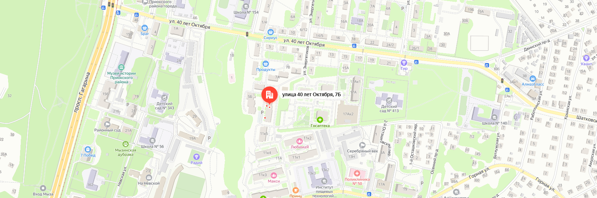

Контакты Гончарной Мастерской


Как нас найти
Мы находимся по адресу: 40 лет Октября, 7б, Нижний Новгород

Керамика, безусловно, прочный материал, но не стоит забывать о её хрупкости. Изделия из глины плохо переносят ударные нагрузки, поэтому падение даже с небольшой высоты может привести к их повреждению. К сожалению, такие случаи неизбежны и часто заканчиваются печально для изделия.
Глазурь на керамических изделиях достаточно устойчива, но лучше избегать использования кислот. Для повседневного мытья подойдет обычное средство для посуды. Чтобы глазурь не потускнела, не применяйте абразивные материалы и металлические щетки.
Использование керамической посуды в микроволновке запрещено.
Со временем на глазури могут появиться мелкие трещинки, которые называются цеками. Сначала они почти не видны, но со временем пыль может сделать их более заметными, особенно на светлой глазури. Если изделие покрыто кракле-глазурью или выполнено из не термостойких материалов, то мыть его в посудомоечной машине не рекомендуется.
Мы находимся по адресу: 40 лет Октября, 7б, Нижний Новгород